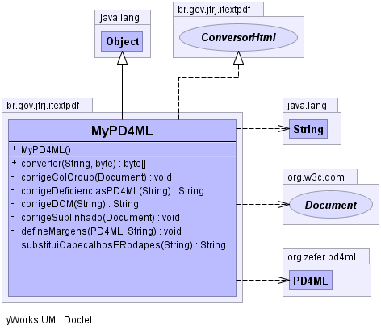

br.gov.jfrj.itextpdf
Class MyPD4ML
java.lang.Object
 br.gov.jfrj.itextpdf.MyPD4ML
br.gov.jfrj.itextpdf.MyPD4ML
- All Implemented Interfaces:
- ConversorHtml
public class MyPD4ML
- extends java.lang.Object
- implements ConversorHtml
-
-

| Methods inherited from class java.lang.Object |
clone, equals, finalize, getClass, hashCode, notify, notifyAll, toString, wait, wait, wait |
MyPD4ML
public MyPD4ML()
converter
public byte[] converter(java.lang.String html,
byte outputMode)
throws java.lang.Exception
- Specified by:
converter in interface ConversorHtml
- Throws:
java.lang.Exception
substituiCabecalhosERodapes
private java.lang.String substituiCabecalhosERodapes(java.lang.String html)
corrigeDeficienciasPD4ML
private java.lang.String corrigeDeficienciasPD4ML(java.lang.String html)
throws java.lang.Exception
- Throws:
java.lang.Exception
corrigeDOM
private java.lang.String corrigeDOM(java.lang.String html)
throws java.lang.Exception
- Throws:
java.lang.Exception
corrigeSublinhado
private void corrigeSublinhado(org.w3c.dom.Document doc)
corrigeColGroup
private void corrigeColGroup(org.w3c.dom.Document doc)
defineMargens
private void defineMargens(org.zefer.pd4ml.PD4ML pd4ml,
java.lang.String html)